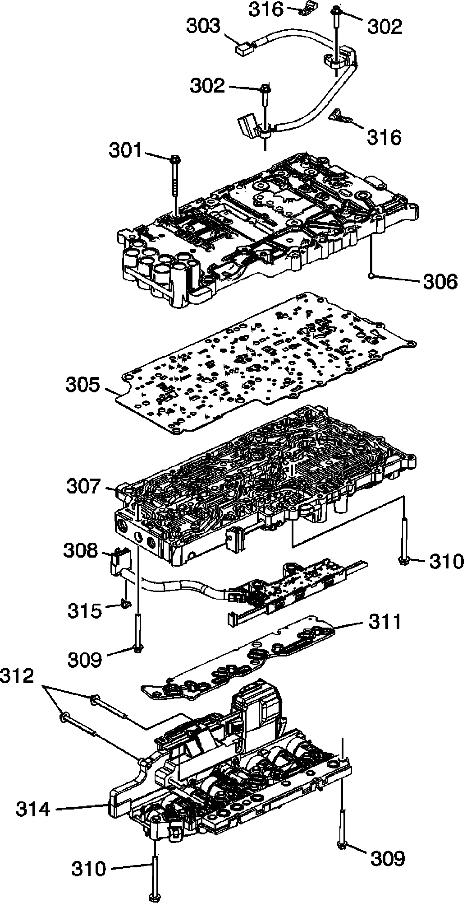
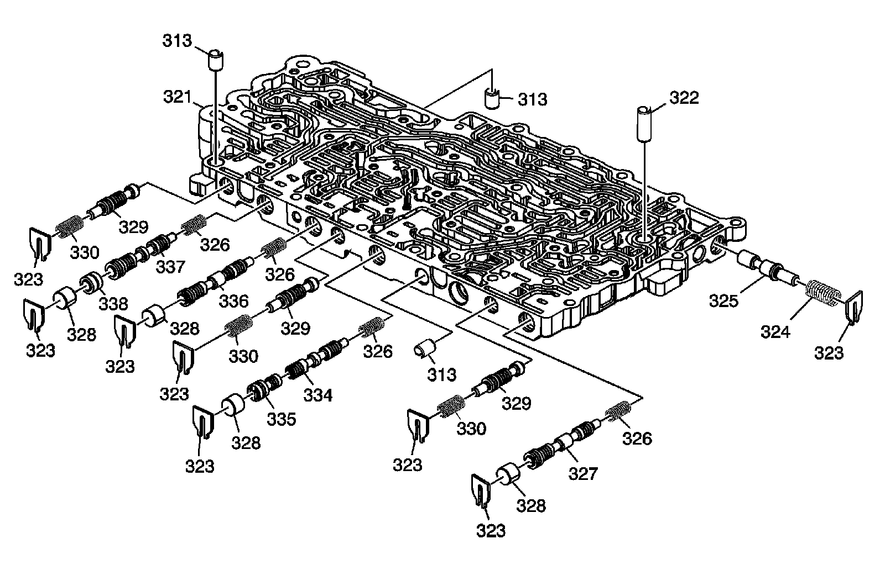
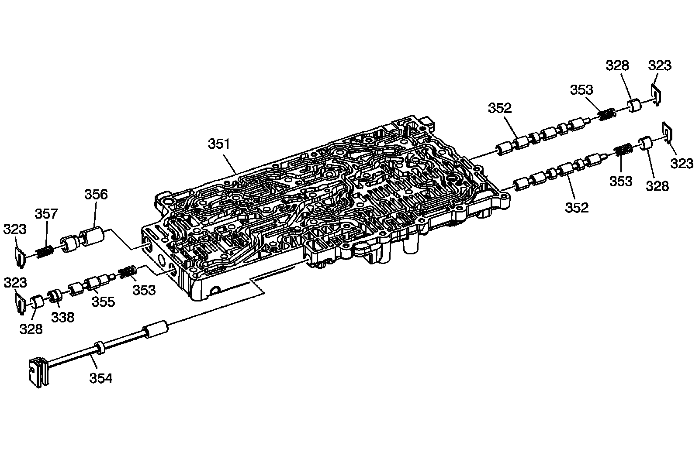

6L50/6L80/6L90 - Automatic Transmission
Disassembled Views (6L80)
Control (with Body and Valve) Valve Assembly:

301 - Bolt, M5 x 36 mm
302 - Bolt, M6 x 20 mm
303 - A/Trans Input and Output Speed Sensor Assembly
304 - Control Valve Upper Body Assembly
305 - Control Valve Body Spacer (w/ Gasket) Plate Assembly
306 - Control Valve Body Ball Check Valve
307 - Control Valve Lower Body Assembly
308 - A/Trans Manual Shift Shaft Position Switch Assembly
309 - Bolt, M5 x 45 mm
310 - Bolt, M5 x 55 mm
311 - Filter Plate Assembly
312 - Bolt, M5 x 53 mm
314 - Control Solenoid (w/ Body and TCM) Valve Assembly
315 - A/Trans Manual Shaft Position Switch Wiring Harness Clip
316 - A/Trans Input and Output Speed Sensor Wiring Harness Clip
Upper Control Valve Body Assembly:

313 - Control Valve Body Locator Pin
321 - Control Valve Upper Body
322 - Control Valve Body Locator Pin
323 - Retainer
324 - Actuator Feed Limit Valve Spring
325 - Actuator Feed Limit Valve
326 - Clutch Regulator Valve Spring
327 - 1st/Reverse Band and 4-5-6 Clutch Regulator Valve
328 - Clutch Regulator Valve Bore Plug
329 - Clutch Boost Valve
330 - Clutch Boost Valve Spring
334 - 2-6 Clutch Regulator Valve
335 - 2-6 Clutch Regulator Valve Gain Valve
336 - 3-5 Reverse Clutch Regulator Valve
337 - 1-2-3-4 Clutch Regulator Valve
338 - Shuttle Valve
Lower Control Valve Body Assembly:

323 - Retainer
328 - Clutch Regulator Valve Bore Plug
338 - Shuttle Valve
351 - Control Valve Lower Body
352 - Clutch Select Solenoid Valve
353 - Clutch Select Solenoid Valve Spring
354 - Manual Valve
355 - TCC Regulator Apply Valve
356 - Clutch Piston Dam Feed Regulator Valve
357 - Clutch Piston Dam Feed Regulator Valve Spring